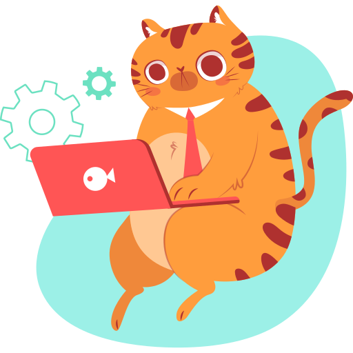

I'm Zsófi.
I will be a programmer.


Currently I am looking for new challenges: want to be a programmer. HTML & CSS learning makes me happy. Next step in this summer: JavaScript. 💪
I 💙 spending my free time with my family, 💙 drinking coffee in the morning & hiking in the mountains on holidays.

Figma, Adobe InDesign, Illustrator, Photoshop
HTML, CSS, JavaScript, Git...

Growth Mindset – learning is my passion.
I'm persistent & reliable. I have a friendly, honest, empathic personality.